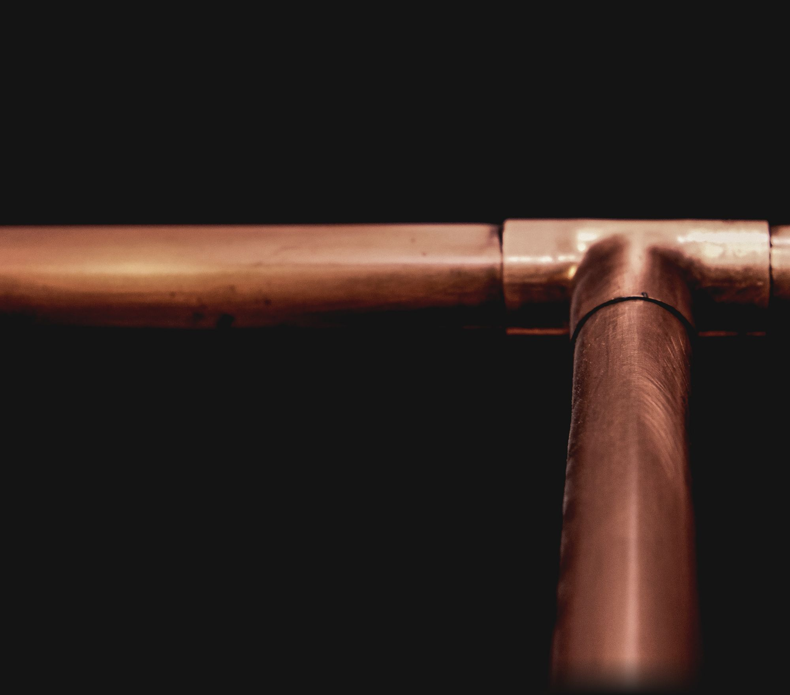
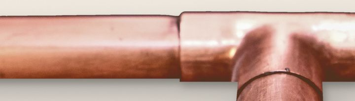
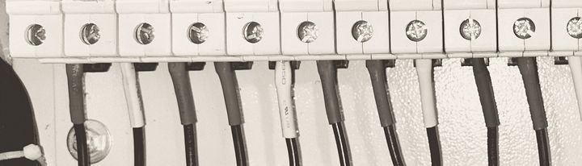
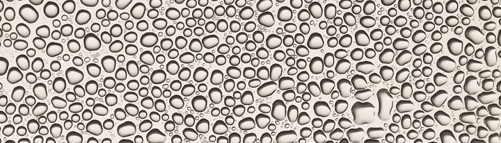
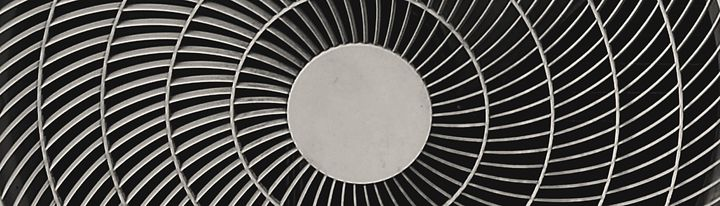
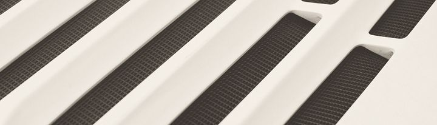
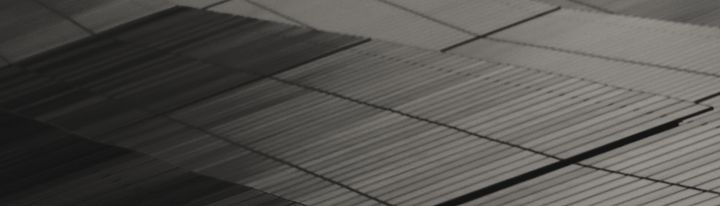
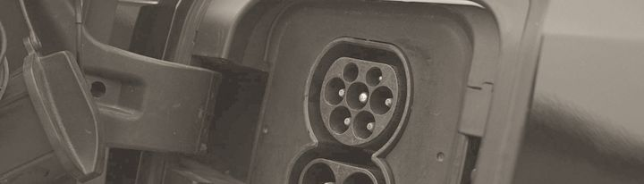
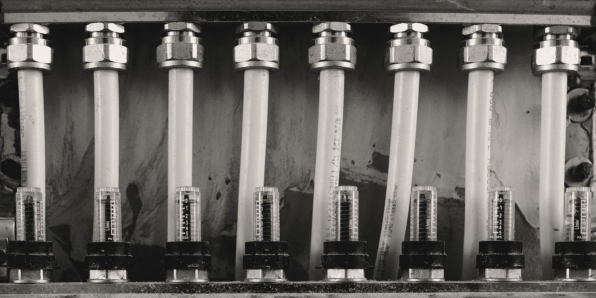
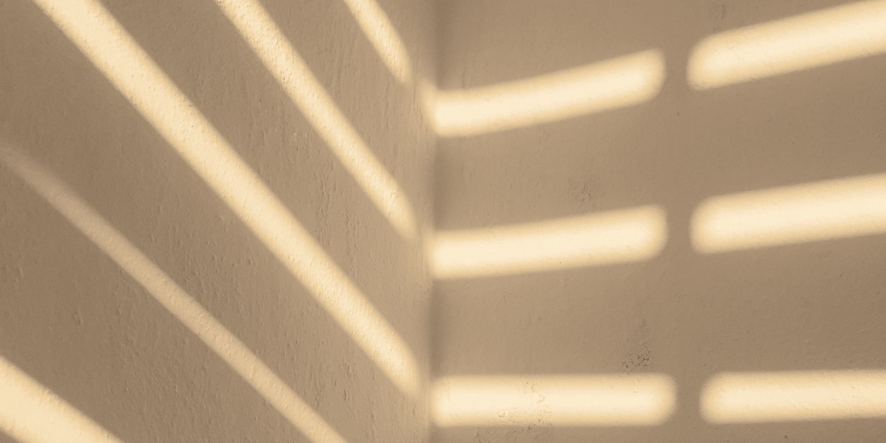

Dalla A alla Z
Otto mestieri su ventuno lettere: impianti elettrici e termoidraulici, clima, pompe di calore Viessmann, fotovoltaico e ristrutturazioni. Una squadra di 17 persone a Vigonovo, un numero solo.

TTermoidraulica Riscaldamento e acqua calda sanitaria: tubi, raccordi e collettori.
Una casa dalla A alla Z
Chi rifà casa di solito chiama tre ditte: il muratore, l'idraulico, l'elettricista. Qui il cantiere ha un numero solo, e i mestieri arrivano nell'ordine in cui servono.
- 01
Ristrutturazioni
Ristrutturazioni edili: si apre il muro e, a impianti finiti, lo si richiude.
Nella foto: cazzuola con la malta.
- 02
Termoidraulica
Riscaldamento e acqua calda sanitaria: tubi, raccordi e collettori.
Nella foto: raccordo a T in rame.

- 03
Elettrico
Impianti elettrici, dal quadro all'ultima presa.
Nella foto: morsetti di un quadro e cavi in parallelo.

- 04
Acqua
Trattamento dell'acqua che arriva a caldaia e rubinetti.
Nella foto: gocce d’acqua su una superficie chiara.

- 05
Pompe di calore
Pompe di calore e sistemi ibridi, come partner Viessmann.
Nella foto: griglia del ventilatore di un’unità esterna.

- 06
Clima
Climatizzatori e trattamento dell'aria.
Nella foto: griglia di aerazione.

- 07
Fotovoltaico
Fotovoltaico residenziale, sul tetto di casa.
Nella foto: celle di un modulo fotovoltaico.

- 08
Mobilità elettrica
Punti di ricarica per l'auto elettrica.
Nella foto: presa di ricarica di un’auto.

Chi siamo

17persone nella squadra, nel 2025
- Mestieri
- 8, con un solo numero da chiamare
- Partner
- Viessmann, per pompe di calore e sistemi ibridi
- Sede
- Via del Lavoro 37, zona artigianale, Vigonovo
Lavoriamo per privati, aziende ed enti pubblici. Con Viessmann installiamo anche gli impianti commerciali: la nostra pagina di partner.

Il lavoro migliore è quello che a cantiere chiuso non si vede più. In casa resta la temperatura giusta.
Dopo la Z, un numero solo
Dal lunedì al sabato, 8.30-19.00. Domenica chiuso.
Via del Lavoro 37, zona artigianale, 30030 Vigonovo (VE): apri in Google Maps
info@fmsistemisrl.it; per preventivi e sopralluoghi commerciale@fmsistemisrl.it